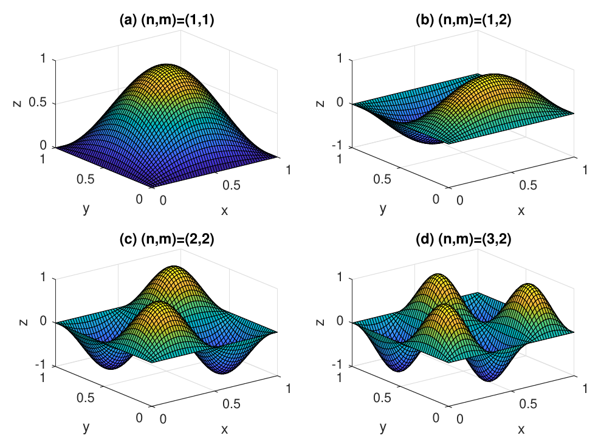

8 Waves on rectangular domain
You find content related to this lecture in the textbooks:
Consider a rectangular membrane: \(D=\{(x,y)\in\mathbb{R}^2\vert 0<x<a, \ 0<y<b \}\). Let’s solve the wave equation \[ \partial_t^2 \, z -c^2 \, \left(\partial_x^2 \, z + \partial_y^2 \, z\right)=0 \quad \text{in} \ \ D \tag{8.1}\] subject to the fixed (Dirichlet) boundary condition \[ z(x,y,t)=0 \quad \text{on} \ \ \partial D \tag{8.2}\] or, equivalently, \[ z(0,y,t)=0, \quad z(a,y,t)=0 \tag{8.3}\] and \[ z(x,0,t)=0, \quad z(x,b,t)=0. \tag{8.4}\] To find a solution, we use the method of separation of variables (see Section 4.1), i.e., we make the Ansatz \[ z(x,y,t)=X(x)Y(y)T(t). \tag{8.5}\] Substituting this Ansatz into the wave equation, we get \[ XYT''=c^2\left(X''YT + XY''T\right), \tag{8.6}\] which, after dividing by \(XYT\) gives \[ \frac{T''(t)}{T(t)} = c^2\left(\frac{X''(x)}{X(x)} +\frac{Y''(y)}{Y(y)}\right). \tag{8.7}\] In the last equation, we have a function of one variable, \(t\), on the left side and a function of two different variables, \(x\) and \(y\), on the right side. The equation can be satisfied for all \(x\), \(y\) and \(t\) only if both sides are equal to a constant. As in Section 4.1, we choose this constant to be negative and (for convenience) equal to \(-k^2 c^2\) (for arbitrary real \(k\)). Again, the possibility of a positive constant is excluded, because with a positive constant it is impossible to find solutions satisfying the boundary conditions. Thus, we have \[ \frac{T''(t)}{T(t)} = c^2\left(\frac{X''(x)}{X(x)} +\frac{Y''(y)}{Y(y)}\right)= -k^2 c^2. \tag{8.8}\] This leads to the ODE \[ T''(t)=-c^2 k^2 \, T(t) \tag{8.9}\] and to the equation \[ \frac{X''(x)}{X(x)} +\frac{Y''(y)}{Y(y)}= -k^2. \tag{8.10}\] The general solution of Eq. 8.9 is \[ T(t)=F \, \sin(k c t) +G \, \cos(k c t), \tag{8.11}\] where \(F\) and \(G\) are arbitrary constants.
Rewriting Eq. 8.10 as \[ \frac{X''(x)}{X(x)}= -k^2 -\frac{Y''(y)}{Y(y)}, \tag{8.12}\] we conclude that for this equation to hold for all \(x\) and \(y\), both sides must be equal to a constant, which we choose to write as \(-\nu^2\) (for some real \(\nu\)). Also, introducing the constant \(\mu\) so that \(\nu^2+\mu^2=k^2\) gives us the equations \[ X''(x) =-\nu^2 X(x), \quad Y''(y)=-\mu^2Y(y). \tag{8.13}\]
The general solutions are \[\begin{split} X(x)&=A\sin(\nu x)+ B\cos(\nu x),\\ Y(y)&=C\sin(\mu y)+ D\cos(\mu y), \end{split} \tag{8.14}\] for arbitrary constants \(A,B,C,D\).
Now we are ready to impose the boundary conditions.
The condition \(z(0,y,t)=0\) for all \(y,t\) requires that \(X(0)=0\) and, because \(X(0)= B\), this implies that \(B=0\). Similarly the condition \(z(a,y,t)=0\) requires that \(X(a)=0\) and because \(X(a)=A\sin(\nu\, a)\) (because we already know that \(B=0\)), this implies that either \(A=0\), which is not an interesting case because it makes the entire solution vanish, or that \(\nu=n\pi/a\) with \(n\in \mathbb{Z}\). Without loss of generality we can take \(n\in\mathbb{N}\) because negative \(n\) just give the same solution up to a sign that can be absorbed into the arbitrary constant \(A\), and \(n=0\) gives the zero solution.
The conditions \(z(x,0,t)=0=z(x,b,t)\) similarly require that \(Y(0)=0=Y(\pi)\) and thus \(D=0\) and \(\mu=m\pi/a\) with \(m\in\mathbb{N}\).
Thus we have found the following solutions satisfying the boundary conditions: \[\begin{split} z_{nm}(x,y,t)=&\sin\left(\frac{\pi}{a}nx\right)\sin\left(\frac{\pi}{b}my\right)\\ &\cdot\left(F_{nm}\sin(k_{nm}ct)+G_{nm}\cos(k_{nm}ct)\right) \end{split} \tag{8.15}\] with \[ k_{nm}=\sqrt{\left(\frac{n\pi}{a}\right)^2+\left(\frac{m\pi}{b}\right)^2} \tag{8.16}\] for any choice of \(n,m\in\mathbb{N}\) and \(F_{nm},G_{nm}\in\mathbb{R}\).
Note that solutions Eq. 8.15 already satisfy the boundary conditions Eq. 8.3 and Eq. 8.4. Such solutions are called normal modes of the membrane. Snapshots of normal modes with \((n,m)=(1,1)\), \((n,m)=(1,2)\), \((n,m)=(2,2)\) and \((n,m)=(3,2)\) are shown in Figure 8.1.

The amplitudes of the normal modes oscillate over time. The following video shows an animation of various normal modes:
Any solution of the wave equation Eq. 8.1 satisfying the boundary conditions Eq. 8.3 and Eq. 8.4 can be presented as a linear combination of normal modes Eq. 8.15:
\[ z(x,y,t)=\sum_{n=1}^\infty\sum_{m=1}^\infty z_{nm}. \tag{8.17}\] The free constants \(F_{nm}\) and \(G_{nm}\) are then determined by the initial conditions, using the Fourier transform technique as in the one-dimensional case.
To construct a solution satisfying the initial conditions \[ z(x,y,0)=z_0(x,y), \quad \partial_t z(x,y,0)=v_0(x,y) \tag{8.18}\] we evaluate our general solution and its \(t\) derivative at the boundary. This gives \[ z(x,y,0)=\sum_{n=1}^{\infty}\sum_{m=1}^{\infty} \sin\frac{\pi n x}{a} \, \sin\frac{\pi m y}{b} G_{nm}= z_0(x,y), \tag{8.19}\] \[ \partial_t z(x,y,0)=\sum_{n=1}^{\infty}\sum_{m=1}^{\infty} k_{nm} c \, B_{nm} \, \sin\frac{\pi n x}{a} \, \sin\frac{\pi m y}{b}=v_0(x,y). \tag{8.20}\] Comparing these with the (double) Fourier series for functions \(z_0(x,y)\) and \(v_0(x,y)\), one can deduce that \[\begin{split} G_{nm} &= \frac{4}{ab} \, \int\limits_{0}^{a} dx \int\limits_{0}^{b} dy \, z_0(x,y) \sin\frac{\pi n x}{a} \, \sin\frac{\pi m y}{b}, \\ F_{nm} &= \frac{1}{k_{nm}c} \, \frac{4}{ab} \, \int\limits_{0}^{a} dx \int\limits_{0}^{b} dy \, v_0(x,y) \sin\frac{\pi n x}{a} \, \sin\frac{\pi m y}{b}. \end{split} \tag{8.21}\]